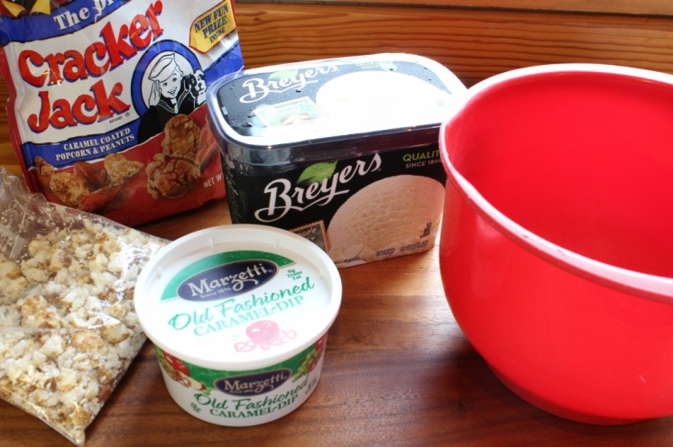

.png)
.PNG)
.PNG)
.PNG)
.PNG)
.PNG)
.JPG)
.JPG)
.PNG)
.PNG)


Desserts are my weakness. I’ll admit it. When I open a menu in a restaurant, I don’t start with the appetizers. No sirree, I go straight to see the desserts. If they are good, I will order a lighter entree…or perhaps skip it altogether. 🙂 Our son who is working in Atlanta for the summer, recently dined at The General Muir, a relatively new restaurant at Emory Point. (The heck with the food. I am in love with that floor!)
He was telling me about the dessert he had there..a Cracker Jack ice cream sandwich. I was intrigued and did a lot of searching online to see if I could find it or something like it. No luck, but I did find this blog post at 1 Fine Cookie with wonderful step by step directions on making a Cracker Jack ice cream cone. It is a delicious sounding recipe with a lot of steps, and I would have followed it for our 4th of July dessert if I had had the time, but I needed something much less complicated. So I took the basic concept of Jasmine’s recipe for the ice cream cones and modified it to use ingredients that I had on hand. I started with these ingredients (but I used 2 cartons of ice cream.)

My first step was to allow the ice cream to soften. Then crush the Cracker Jack pieces.

Jasmine’s recipe called for layering caramel and the Cracker Jack pieces with her homemade ice cream. So I heated the caramel dip just a little to make it more liquid. (I used Marzetti’s caramel dip because I know it has a true caramel flavor – not a butterscotch one like so many “caramel” sauces seem to have.) Then I spread a layer of it in the bottom of a bowl and sprinkled some of the Cracker Jack pieces on it.

I then added a layer of ice cream and repeated this layering until all of the ice cream was used.

Finally I wrapped the bowl in plastic wrap and tried to make sure the plastic was pushed down to touch the ice cream. This was to help stop ice crystals from forming on top of it. You can see that I didn’t get the plastic all the way down on all of it.

Then it went into the freezer to get firm again.
The next step was to prepare the cones. I used 1 package of 12 waffle cones and an 11.5 ounce package of milk chocolate baking chips. Jasmine recommended using semi-sweet baking chips in her recipe, and I think they would be better. Ours were awfully sweet, and the semi-sweet would have probably been a better complement to the sweetness of the ice cream. Either way, use a microwave safe bowl and melt and stir the chocolate in 20 second intervals until smooth and all melted.

Then came the fun part of dunking the cones in the melted chocolate.

After that the outside of the cones were rolled in more crushed Cracker Jack pieces. This is where it was messy!

The cones were then placed in cone holders (from Target) and left to harden. I did not coat all of the cones with the Cracker Jack pieces in case there were people who wanted something different.

At last it was time to serve them. I gave everyone choices of the Cracker Jack ice cream in the Cracker Jack cones or another flavor in a cone of their choice or a cookie dessert I will show you in a second. Everyone chose the Cracker Jack ice cream. 🙂
 (The ice cream is a little melted in this photo.)
(The ice cream is a little melted in this photo.)
It was good with a mix of sweet and salty flavors with some crunch. I still think it needs some toning down of that chocolate sweetness (and this is coming for a true chocolate lover!) Now that you have followed through all the steps, here is a recipe of how they were made:

Besides the ice cream cones, there was one other dessert choice for our holiday meal…

This was made by warming one and a half homemade chocolate chip cookies, topping them with two scoops of espresso chip ice cream and whipped cream, and adding chocolate syrup over all of it. It was good enough to make you want to lick your plate! Because our hamburger bar for the 4th of July and the Cracker Jack ice cream cones were enjoyed a day or so earlier than the real holiday, this was what we enjoyed on the 4th of July. (But it would be good anytime!)
I hope all this overdose of sugar has not sent any of you into a diabetic coma like Father Tim in Jan Karon’s Mitford books! Fresh vegetables are beginning to be ready in the gardens around here, so we will have some healthy food to make up for all the dessert consumption. 🙂 I hope you have a fun weekend. Cook something delicious!
until next time…


.PNG)
Kelly,
The cracker jack cones are so tempting and sound pretty doable. I know most of my family would love to have these so I may be trying my hand at your recipe later this summer.
Thanks,
Karen
——————————————————————————
Karen, I think everyone would love them. I hope you do get to try them out. If you don’t do the ice cream, at least do the cones. They would be good with many flavors of ice cream.
Kelly
That looks like a lot of work but the reward would be great, I imagine. 😉
——————————————————————————
There were a lot of steps to it,but yes it was worth it. If it is sweet and has chocolate, I don’t mind the work at all!
Kelly
Oh my Kelly, I was showing my daughter the picture of the gingham floor and in re-reading your post I realized your son DOESN’T work there…..I was so enamored with the floor I didn’t read it correctly….sorry…..but I do love that floor (she did too).
——————————————————————————
That is quite alright Martha. When I saw that floor I told him he SHOULD look at getting a job there! I am happy that your ice cream was a hit and that you were able to convince your husband to be adventurous enough to try the different coleslaw. I love the crunch that the noodles give it. I laughed out loud at your dijon mustard comment!
Kelly
Love the gingham floor! Never seen it done like that before, how funny your son would work there.He probably saw the floor and a subliminal message told him YOU MUST WORK HERE!
Love the cones…who needs ice cream with yummy cones like that? Our cherry, blueberry ice cream was a hit, we made 6 quarts and most of it was gone.
I also made your ramen coleslaw, it was delicious. My husband was skeptical at first…why in the world would I put noodles in coleslaw??? but in the end he decided it was OK to be a bit different. His idea of being an adventuresome eater is putting Dijon mustard on his hotdog instead of French’s yellow. 🙂
Kelly- That looks absolutely decadent! I can only imagine how GOOD those cones are! xo Diana
——————————————————————————
Thank you Diana. I think I could eat the chocolate dipped cones alone and still be quite happy. 🙂
Kelly
I couldn’t look at anything but that floor! Be still my heart!
—————————————————————
I know Wanda! Wasn’t that floor amazing?!
Kelly
I am with you Kelly, bring on the desserts. I had one of the best chocolate cakes ever at the Plaza Cafe on the square in Santa Fe. It is worth giving up all entrees!! Where is Emory Point? Looks like a new Atlanta shopping center that I need to know about.
——————————————————————————
Arlene a chocolate cake would be wonderful right now!! Yum. Emory Point is near Emory University…northeast Atlanta near the Druid Hills area on Clifton Road. It is a live/work/shop center. You should go check it out.
Kelly
Your hamburger bar and your dessert selections look phenomenal and sound so yummy! i’ve enjoyed your posts and have tucked the ideas and recipes away to copy. Thank you! Now go sit on that gorgeous porch of yours and relax!
—————————————————————————————-
You are so very sweet Barbara. Thank you for all the compliments! There is a darn lizard that has taken residence on the porch and is giving me a heart attack each time I see him. My porch time is being used trying to get rid of him. I’ve even tried snake repellent, and it doesn’t work. But I am not giving up yet.
Hope your 4th was fun!
Kelly
What a nice wake up call! A posting from you! Learned so much– great ideas, Kelly! Thought I’d have to wait until late Sunday nite! Must have a cone holder from Target– there are so many ways to use those — wonder if there is a cookbook with other “cone” ideas? Noticed the writings on the photos– something new!! Trying to work up my nerve to try a blog!! I’ll put it on my “to-do” list. Just glanced at the menu at General Muir’s– my there are many food terms I have never heard of so I have a lot of googling to keep me busy! Love learning new things– must be the teacher in me! Every post of yours is so informing and so interesting– once again thx to you for opening up my world! Did you set up a hot dog bar on the 4th? Or was it a wash-out?
—————————————————————————–
I haven’t seen a cookbook with cone ideas yet, but you can bet somebody will come up with it…and probably make a lot of money doing so. Perhaps you might think of doing that? Along with the blog you WILL start. LOL. General Muir’s has many different foods because they are supposed to be a Jewish deli with Jewish food (although many people say they are not really traditional foods.) I am happy that you found some interesting terms to learn about here. We did have a casual hot dog bar on the 4th…inside. Husband got wet cooking the hotdogs like I knew he would. He now thinks he cannot grill unless it is raining!
Kelly
Yum! I will be trying that…especially the cone dipping. And, yes, that floor is so you! (The Charleston Harbor Resort and Marina has that floor in carpet in their hotel rooms…but in blue. Check it out online and you might want to wander down there….not a B&B but very pretty.)
——————————————————————————
Kathy thanks for the info on the Charleston Harbor Resort and Marina. I haven’t been to Charleston in years,so I will definitely be checking it out…checked floor and all!
Kelly
Yummy post, that sweet/salty combination just can’t be beat. And to amp up the ice cream cones, what a terrific idea. (I always check out a restaurant’s desserts right away, also. And, even thought these days I have to usually forego it, I still tend to rate a menu based on the dessert selections.) I think the Cracker Jacks theme was a good decision for the Fourth, a real all-American snack treat!
——————————————————————————
Oh yes, Paula, the dessert selection is VERY important! I thought the Cracker Jacks was very fitting for the holiday, too. Hope your holiday was a good one!
Kelly